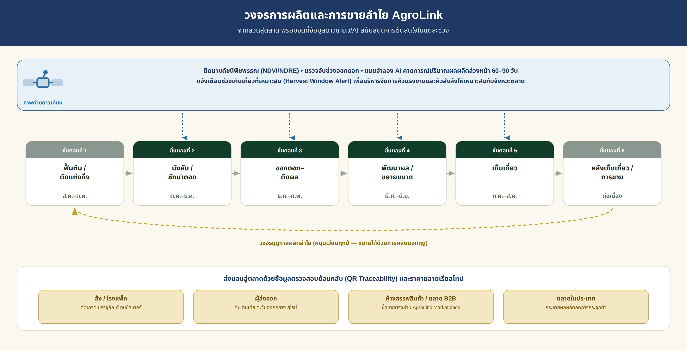

ยกระดับห่วงโซ่คุณค่าลำไยไทยด้วยข้อมูล — เชื่อมเกษตรกร สหกรณ์ ล้ง ผู้แปรรูป และผู้ซื้อต่างประเทศ พร้อมใช้ภาพถ่ายดาวเทียมและ AI สำรวจและคาดการณ์ผลผลิตเพื่อบริหารจัดการเก็บเกี่ยวให้เหมาะสม
ฉบับร่างเพื่อหารือเชิงนโยบาย | ตุลาคม 2569 — บริษัท ภักดี คอร์ปอเรชั่น จำกัด (AgroLink)
ลำไยเป็นพืชเศรษฐกิจสำคัญของประเทศไทยที่มีมูลค่าการตลาดรวมประมาณ 30,000–40,000 ล้านบาทต่อปี อย่างไรก็ตาม โครงสร้างการผลิตและการค้าเดิมยังเผชิญความท้าทายด้านราคาตกต่ำ ปัญหาผลผลิตล้นตลาดในช่วงฤดูเก็บเกี่ยวหลัก และข้อจำกัดด้านมาตรฐานการส่งออก
แพลตฟอร์ม AgroLink ถูกพัฒนาขึ้นเพื่อเป็นโครงสร้างพื้นฐานดิจิทัลในการเชื่อมโยงเกษตรกร โรงแพ็ค/ล้ง ผู้แปรรูป และผู้ซื้อต่างประเทศ ช่วยแก้ปัญหาความไม่สมบูรณ์ของข้อมูล (Information Asymmetry) ยกระดับสู่เกษตรแม่นยำ และสร้างความยั่งยืนตลอดห่วงโซ่คุณค่า โดยจุดเน้นสำคัญของหน้านี้คือการใช้ ภาพถ่ายดาวเทียมและ AI สำรวจและคาดการณ์ปริมาณผลผลิตล่วงหน้า เพื่อช่วยบริหารจัดการการเก็บเกี่ยวให้เหมาะสมกับจังหวะตลาด
ลำไยเป็นหนึ่งในผลไม้ส่งออกหลักของประเทศไทย โดยมีพื้นที่ปลูกสำคัญในภาคเหนือ (เชียงใหม่ ลำพูน พะเยา เชียงราย) และภาคตะวันออก (จันทบุรี สระแก้ว) ผลผลิตรวมต่อปีอยู่ระหว่าง 1.0–1.3 ล้านตัน ซึ่งสร้างรายได้มหาศาลแก่ประเทศ อย่างไรก็ดี โครงสร้างระบบนิเวศการค้าลำไยในปัจจุบันยังประสบปัญหาสำคัญ 3 ประการ
การพึ่งพาตลาดส่งออกเดี่ยว (จีน) สูงถึง 70–75% ทำให้เกิดความเสี่ยงเมื่อเกิดการเปลี่ยนแปลงนโยบายด่านหรือผลผลิตในประเทศจีนออกสู่ตลาด
เกษตรกรส่วนใหญ่ยังขาดการเข้าถึงข้อมูลการคาดการณ์ผลผลิตและอุปสงค์ในตลาด ทำให้เกิดปัญหาผลผลิตกระจุกตัวในฤดู (กรกฎาคม–สิงหาคม) ส่งผลให้ราคาตกต่ำพร้อมกันทั้งระบบ
มาตรการตรวจสอบสารตกค้าง (เช่น ซัลเฟอร์ไดออกไซด์) และมาตรฐาน GAP/GMP มีความเข้มงวดมากขึ้น หากขาดระบบการตรวจสอบย้อนกลับ (Traceability) จะกระทบต่อความเชื่อมั่นของผู้ซื้อ
ตารางด้านล่างสรุปวงจรการผลิตลำไยโดยภาพรวม ตั้งแต่หลังเก็บเกี่ยวจนถึงการจำหน่าย พร้อมช่วงเวลาโดยประมาณของฤดูหลัก (ในฤดู) และจุดที่ข้อมูลดาวเทียม/ดิจิทัลของ AgroLink เข้ามาสนับสนุนการตัดสินใจในแต่ละขั้นตอน — ช่วงเวลาที่ระบุเป็นค่าประมาณ ของลำไยพันธุ์อีดอในภาคเหนือ และอาจเปลี่ยนแปลงได้ตามพื้นที่ สภาพอากาศ และการใช้สารบังคับดอกนอกฤดู
| ขั้นตอน | ช่วงเวลาโดยประมาณ (ในฤดู) | กิจกรรมหลักของเกษตรกร | บทบาทข้อมูลดาวเทียม/ดิจิทัล |
|---|---|---|---|
| ฟื้นต้น/ตัดแต่งกิ่ง | สิงหาคม–ตุลาคม | ตัดแต่งทรงพุ่มหลังเก็บเกี่ยว ใส่ปุ๋ยฟื้นฟูต้น | ประเมินความสมบูรณ์ของทรงพุ่มด้วยดัชนีพืชพรรณ (NDVI) หลังเก็บเกี่ยว เพื่อวางแผนฟื้นฟูต้นรายแปลง |
| บังคับ/ชักนำการออกดอก | ตุลาคม–ธันวาคม | ให้สารโพแทสเซียมคลอเรต ควบคุมน้ำและใบอ่อน | ติดตามดัชนีพืชพรรณเพื่อประเมินความพร้อมของต้นก่อนให้สารบังคับดอก |
| ออกดอก–ผสมเกสร–ติดผล | ธันวาคม–กุมภาพันธ์ | ดูแลการผสมเกสร ป้องกันแมลงและโรคช่อดอก | ตรวจจับช่วงดอกบานจากภาพดาวเทียมหลายช่วงเวลา เริ่มนับอายุผลเพื่อคาดวันเก็บเกี่ยวล่วงหน้า |
| พัฒนาผล/ขยายขนาด | มีนาคม–มิถุนายน | ให้น้ำ-ปุ๋ยตามระยะ ป้องกันโรคแมลงและผลร่วง | แบบจำลอง AI ประมวลผลข้อมูลดาวเทียมและสภาพอากาศ คาดการณ์ปริมาณผลผลิตล่วงหน้า 60–90 วัน |
| เก็บเกี่ยว | กรกฎาคม–สิงหาคม | เก็บผลตามความแก่ คัดคุณภาพเบื้องต้น ส่งล้ง/จุดรับซื้อ | แจ้งเตือนช่วงเก็บเกี่ยวที่เหมาะสม (Harvest Window Alert) ช่วยวางแผนคิวแรงงานและคิวส่งล้ง |
| หลังเก็บเกี่ยว/การขาย | ต่อเนื่องตลอดฤดู | คัดเกรด อบซัลเฟอร์/แปรรูป ส่งออกหรือจำหน่ายในประเทศ | ตรวจสอบย้อนกลับด้วย QR Code เชื่อมข้อมูลแปลงปลูกถึงบรรจุภัณฑ์ และราคาตลาดเรียลไทม์จาก AgroLink Dashboard |
หัวใจของการบริหารจัดการเก็บเกี่ยวลำไยให้เหมาะสมคือการรู้ล่วงหน้าว่า "ผลผลิตจะออกมาเท่าไร" และ "จะสุกพร้อมเก็บเกี่ยวเมื่อใด" AgroLink ออกแบบให้ใช้ข้อมูลภาพถ่ายดาวเทียมร่วมกับแบบจำลอง AI ในหลายขั้นตอน ดังนี้
AgroLink Platform ถูกออกแบบมาเพื่อทำหน้าที่เป็น Central Digital Platform ในการเชื่อมโยงผู้มีส่วนได้ส่วนเสีย (Stakeholders) ทุกภาคส่วนในห่วงโซ่คุณค่าลำไยเข้าด้วยกัน ผ่านโมดูลการทำงานหลักดังนี้
ตารางด้านล่างแสดงการเปลี่ยนแปลงเชิงโครงสร้างของระบบนิเวศลำไยเมื่อนำ AgroLink Platform เข้ามาประยุกต์ใช้
| มิติการพัฒนา | รูปแบบเดิม (Traditional Ecosystem) | รูปแบบใหม่ (AgroLink Ecosystem) |
|---|---|---|
| การเข้าถึงข้อมูลตลาด | เกษตรกรไม่ทราบราคาอ้างอิง พึ่งพาการแจ้งราคาจากพ่อค้าท้องถิ่น | เข้าถึงราคาเรียลไทม์และแนวโน้มอุปสงค์จาก AgroLink Dashboard |
| การจัดการผลผลิต | ผลผลิตออกสู่ตลาดพร้อมกัน เกิดภาวะล้นตลาดและราคาตกต่ำ | วางแผนการผลิตใน/นอกฤดู และวางแผนการเก็บเกี่ยวล่วงหน้าร่วมกับผู้ซื้อ |
| การบริหารจัดการเก็บเกี่ยว | คาดคะเนปริมาณผลผลิตด้วยประสบการณ์ ไม่มีข้อมูลล่วงหน้า เก็บเกี่ยวไม่ตรงจังหวะตลาด | คาดการณ์ปริมาณและช่วงเวลาเก็บเกี่ยวล่วงหน้าด้วยข้อมูลดาวเทียม/AI แจ้งเตือนล้งและผู้ซื้อล่วงหน้า |
| การตรวจสอบคุณภาพ | สุ่มตรวจหน้าล้ง ขาดระบบบันทึกย้อนกลับ เสี่ยงโดนตีกลับสินค้า | บันทึกข้อมูลแปลงปลูกแบบดิจิทัล มี QR Code ตรวจสอบย้อนกลับถึงสวน |
| ช่องทางการจำหน่าย | ขายผ่านพ่อค้าคนกลางหลายชั้น ส่วนแบ่งกำไรตกถึงเกษตรกรน้อย | ขายตรงแก่ผู้ส่งออก ห้างสรรพสินค้า และตลาด B2B ต่างประเทศ |
การประยุกต์ใช้ AgroLink Platform ในระบบนิเวศลำไยส่งผลกระทบเชิงบวกใน 3 มิติหลัก
เกษตรกรมีรายได้เพิ่มขึ้น 15–20% จากการลดต้นทุนการผลิต การขายตรงโดยไม่ผ่านคนกลาง และการยกระดับสินค้าสู่เกรดพรีเมียม
ผู้ประกอบการส่งออกและโรงแพ็คสามารถวางแผนการรวบรวมสินค้าล่วงหน้าจากข้อมูลคาดการณ์ผลผลิต ลดความสูญเสียหลังการเก็บเกี่ยว (Post-harvest Loss) ได้มากกว่า 10–15%
ส่งเสริมการใช้สารเคมีและปุ๋ยอย่างเหมาะสมตามระบบ GAP ช่วยลดการปนเปื้อนในดินและแหล่งน้ำ ส่งผลดีต่อสิ่งแวดล้อมอย่างยั่งยืน
เสนอให้เริ่มโครงการนำร่องในพื้นที่ปลูกลำไยหลักของภาคเหนือ (เช่น เชียงใหม่หรือลำพูน) ร่วมกับสหกรณ์การเกษตรและล้งในพื้นที่ ก่อนขยายผลไปยังพื้นที่ปลูกอื่น โดยมีขั้นตอนหลักดังนี้
| ช่วงเวลา | กิจกรรม | ผลผลิตส่งมอบ |
|---|---|---|
| เดือน 1–3 | คัดเลือกพื้นที่/สหกรณ์/ล้งนำร่อง จัดทำ baseline และข้อตกลงด้านข้อมูล | แผนพื้นที่ รายชื่อภาคี และ baseline ผลผลิตย้อนหลัง |
| เดือน 4–6 | ขึ้นทะเบียนแปลงด้วยภาพดาวเทียมและภาคสนาม เริ่มติดตามดัชนีพืชพรรณ | ทะเบียนแปลงดิจิทัลและระบบติดตามต้นแบบ |
| เดือน 7–12 | ทดสอบแบบจำลองคาดการณ์ผลผลิตและ Harvest Window Alert รอบการออกดอก–เก็บเกี่ยวจริง | ข้อมูลความแม่นยำของการคาดการณ์ผลผลิตรอบแรก |
| เดือน 13–18 | ขยายแปลงนำร่อง เชื่อมต่อ B2B Marketplace และระบบ QR Traceability | ธุรกรรมซื้อขายที่ตรวจสอบย้อนกลับได้และรายงานผลกลางทาง |
| เดือน 19–24 | ประเมินผลอิสระ ปรับปรุงแบบจำลอง และออกแบบแผนขยายผล | รายงานผลลัพธ์และแผนลงทุนระยะต่อไป |
ภาครัฐและวิสาหกิจชุมชนควรจัดอบรมเชิงปฏิบัติการให้แก่เกษตรกรในการใช้งาน AgroLink Smart Mobile Application โดยเฉพาะการอ่านผลการแจ้งเตือนช่วงเก็บเกี่ยวและข้อมูลคาดการณ์ผลผลิต
ควรเชื่อมโยงฐานข้อมูล AgroLink กับกรมส่งเสริมการเกษตรและกรมวิชาการเกษตร เพื่อรวมศูนย์ข้อมูล GAP การลงทะเบียนเกษตรกร และข้อมูลคาดการณ์ผลผลิตระดับจังหวัด
ขยายการจับคู่ธุรกิจบนแพลตฟอร์มไปยังตลาดอินเดีย ตะวันออกกลาง และยุโรป เพื่อลดการพึ่งพาตลาดจีนเพียงอย่างเดียว
ไม่ว่าจะในฐานะเกษตรกร สหกรณ์/กลุ่มเกษตรกร โรงแพ็ค/ล้ง ผู้แปรรูป ผู้ส่งออก หรือหน่วยงานภาครัฐ ติดต่อทีมงาน AgroLink เพื่อขอข้อมูลเพิ่มเติมได้ทันที